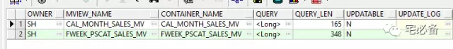
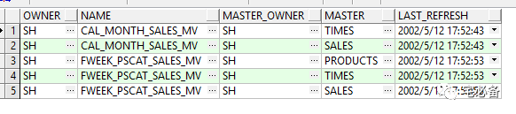

物化视图相关操作
原创 2017-11-24 Oracle 宅必备
1. 查看物化视图相关信息：
1.1 查看物化视图日志
select * from dba_mview_logs ;
1.2 查看物化视图信息
SELECT * FROM dba_MVIEWS;

1.3 查看物化视图上次刷新时间
SELECT * FROM dba_MVIEW_REFRESH_TIMES;

2. 新建物化视图：
2.1 确认主表大小
select segment_name,segment_type,bytes/1024/1024 MB from dba_segments where lower(segment_name)='fwcatns_boatmap';
2.2 确认主表是否已有物化视图日志
select * from dba_mview_logs where lower(master)='fwcatns_pdd_rdstrip' ;
2.3 确认主表索引情况
物化视图不会自动创建原表索引，我们这里先记录其索引信息
2.4 创建物化视图日志（主表）
create materialized view log on SAPSR3.ZTMM0117 with rowid;
2.5 创建物化视图
create materialized view SAPSR3.ZTMM0057
tablespace sapsr3
refresh fast on demand
with rowid
start with sysdate next SYSDATE + 10/1440
enable query rewrite
as
select *
from SAPSR3.ZTMM0057@SAPPROD;
2.5 创建索引
这里创建在 2.2 中获取的索引，如果需要的话
3. 删除物化视图：
3.1 删除主表物化视图日志
DROP MATERIALIZED VIEW LOG ON SAPSR3.GG_ZLX_ZHU;
3.2 删除物化视图
DROP MATERIALIZED VIEW SAPSR3.GG_ZLX_ZHU;
4. 手动刷新物化视图
EXEC DBMS_MVIEW.Refresh('SPCR.DDM_CUST','C');
EXEC DBMS_MVIEW.Refresh('SPCR.DDM_CUST','F');
exec dbms_ijob.run(4)
5. 重新编译物化视图
ALTER MATERIALIZED VIEW mview_name COMPILE;
6. 更改刷新时间
alter materialized view sapsr3.inob refresh start with sysdate next sysdate+10/1440
详细请点击阅读原文: